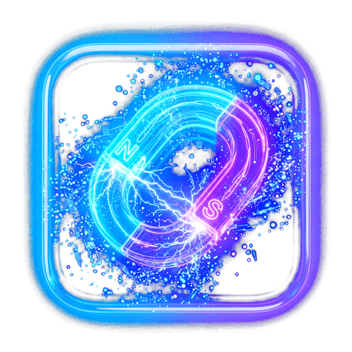
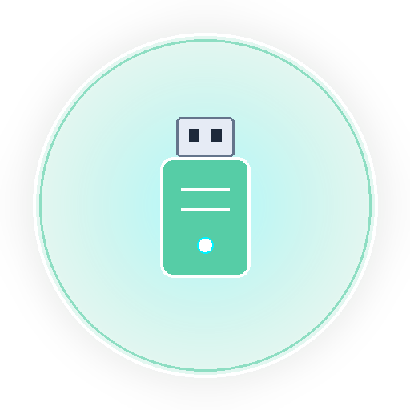

Paste a single video, full playlist, BitTorrent magnet, or 100+ raw split game repacks. Lumina strips away 100% of the web junk and downloads pure binaries at maximum network throughput.

Why Other Download Managers Fail So Terribly
When you try to copy links from FitGirl Repacks, DODI, or SteamUnlocked into standard download tools, they ingest hundreds of useless files: tracking scripts, Disqus comment threads, CSS stylesheets, cloudflare challenge loops, and broken HTML mirrors.
Everything You Need in One Unified Deck
Multi-source 16-connection parallel chunk downloading for direct links, file hosters, and archives with automatic resume and zero fragmentation.

Integrated peer-to-peer engine pre-configured with 40+ high-speed public trackers. No third-party clients or ads required.
Multi-source lyrics retrieval with kinetic autoscrolling and word-by-word synced karaoke mode while listening to your favorite music.
Directly stream audio or preview media from inside repack packages or downloads without having to open an external player.

Plug in a flash drive or external SSD, and Lumina automatically detects it, organizing downloads straight onto your portable device.
Intelligent canvas lifecycle management halts 60fps animation loops the moment Lumina is minimized, conserving your laptop battery.
We believe in honest, uncompromising software. Here are the technical realities of what Lumina cannot do, so you know exactly what to expect:
If a filehost enforces Cloudflare Turnstile or manual human interactive puzzles (e.g. Rapidgator free tier), Lumina cannot automatically solve it. You must resolve the captcha once in your browser.
Lumina cannot grant you free premium speeds on hosts that strictly gate bandwidth behind paid subscription tokens (unless you import your own browser session cookies in Settings).
If an archive was uploaded broken by the repacker and has no recovery records (`.rev`), Lumina cannot reconstruct missing bytes out of thin air. (However, Lumina prevents you from downloading missing parts!).
Lumina does not operate any backend proxy or caching servers. Downloads connect directly between your system and the origin hosts or BitTorrent peers.
Download Lumina 2.0 for Your Device
Built natively for desktop and mobile with zero telemetry and zero third-party adware.
Full 64-bit installer with NSIS setup wizard, Desktop shortcut, and custom protocol handlers.
Portable, zero-dependency AppImage compatible with Fedora, Ubuntu, Arch Linux, Debian, and openSUSE.
Powered by an embedded loopback engine that eliminates WebView CORS blocks completely.
Frequently Asked Questions
Yes. Lumina is published under the MIT license with zero paid tiers, zero subscription fees, and zero hidden telemetry. The complete source code is available on GitHub.
Lumina parses the entire text or HTML you paste, discards all CSS, JavaScript, and ads, identifies the 500MB chunk sequences, resolves intermediate filehosts (like Pixeldrain and Mediafire), and organizes them into complete mirror packages with missing-part verification.
On Windows, they save to %USERPROFILE%\Downloads\Lumina. On Linux, ~/Downloads/Lumina. On Android, /storage/emulated/0/Download/Lumina. If an external USB drive is plugged in, Lumina can automatically route downloads to your USB device.